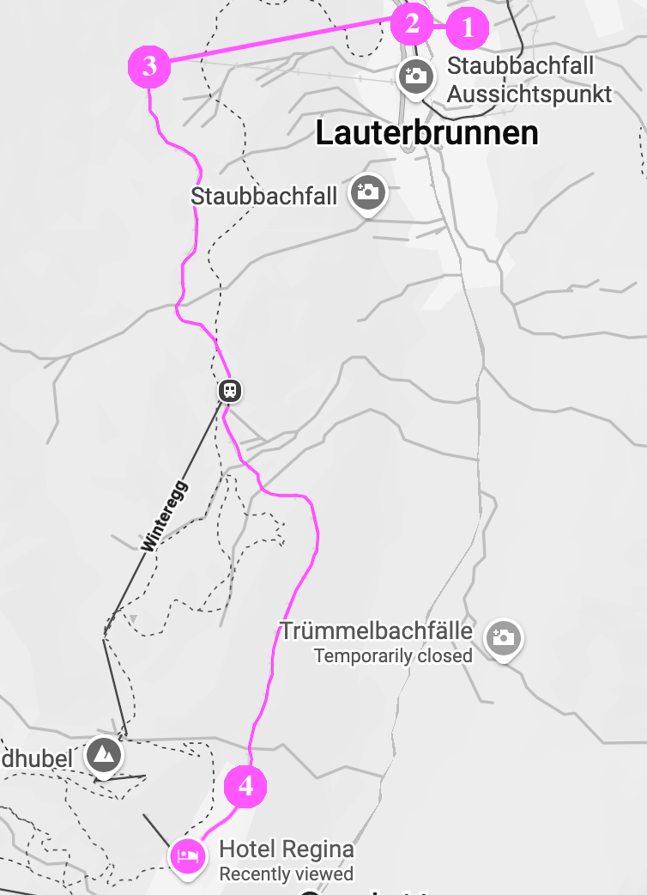

Arriving by car or train
Since Mürren is a car-free village perched on a cliff, reaching Hotel Regina requires a bit of a "park and ride" adventure.
You cannot drive directly to the hotel, but the journey is one of the most scenic in the Swiss Alps.
You have two main options for parking and mountain access:
Option A: Via Lauterbrunnen
1. Park: Use the large Lauterbrunnen Multistorey Car Park (Parkhaus Lauterbrunnen)
located at the entrance of the village. It is connected directly to the train station.
2. The Lift: Take the LSMS Cable Car from Lauterbrunnen up to Grütschalp.
3. The Train: From Grütschalp, board the small mountain railway (BLM) that winds along the cliff edge into Mürren Station.
4. 10 minute walk from the station to the hotel.

Option B: Via Stechelberg
1. Park: Drive further into the valley to the Schilthornbahn parking lot in Stechelberg.
2. The Lift: Take the Schilthorn Cable Car (Luftseilbahn) up to the Mürren station.
3. 5 min walk from the station to the hotel.
This route is steeper and provides a direct aerial view of the waterfalls.